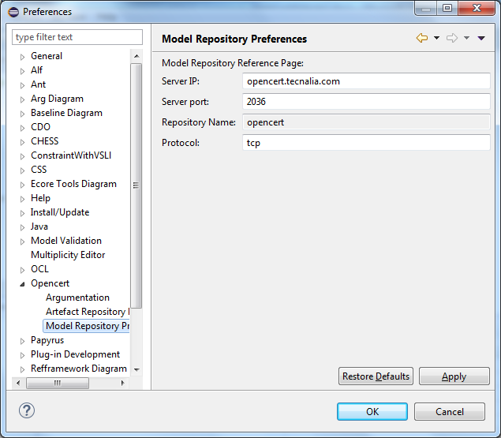

Getting Started with OpenCERT
This section guides the end-user through the use of OpenCert.
Installation
It must be noted that the pre-existing OpenCert tools are designed to follow client-server architecture approach:
- OpenCert server - installed in a central host machine
- One or many OpenCert clients - each of which installed on specific user machines
This installation relates to a standalone version of OpenCert, including Papyrus/CHESS plugins.
OpenCert can also use the Eclipse Process Framework (EPF) toolset. That can be downloaded in a separate Eclipse standalone version (http://www.eclipse.org/epf/downloads/downloads.php). We plan to integrate the whole toolsets in the same standalone version in future releases.
Client bundle download
It is required to have installed (minimum) Java Environment 1.8.
To install the OpenCert platform client, download it from the Download page for Windows 64 bits and uncompress it into your hard disk.
Client configuration
To use the platform execute the eclipse.exe file and introduce a select a folder that will be used as workspace.
The first step after the installation process is to configure the connection settings with the CDO repository where all the models generated using the platform will be stored. This information must be introduced in the Model Repository Preference page inside the OpenCert category. Go to menu Window → Preferences to open this window.

The information to introduce is:
- Server IP: The IP of the centralized CDO Server (opencert.tecnalia.com).
- Server Port: The port used by the running CDO Server. Take into account that if the client is behind a proxy, the port 2036 shall be open, otherwise the communication will fail.
- Repository name: The name of the repository where all the date will be stored (read only).
- Protocol: The protocol used to connect to the CDO Server.
Disable the Repository timeout to avoid the automatic closing of the connection with the server for inactivity using the menu Window → Preference as shown in the image below.
After introducing this data the Opencert Perspective can be used to connect to the server and view the data of the repository configured. To open it, go to menu Window→ Perspective → Open Perspective→ Other.
If the provided connection settings with the repository are incorrect or the server is not running, this view will display the error in the screenshot below instead of the contents of the repository. To solve it, check the server is running (using the page http://opencert.tecnalia.com:8080) and the configuration settings are correct, ensure the communication ports (2036 and 8080) are open, close the Repository Explorer view and open it again (Window→Show View→Other→Opencert→Repository Explorer).
1.3 Deleting Repository contents
To delete a folder and its contents, right click over it and left click the “Delete” menu.
To delete a model, right click over it and left click the “Delete“menu.